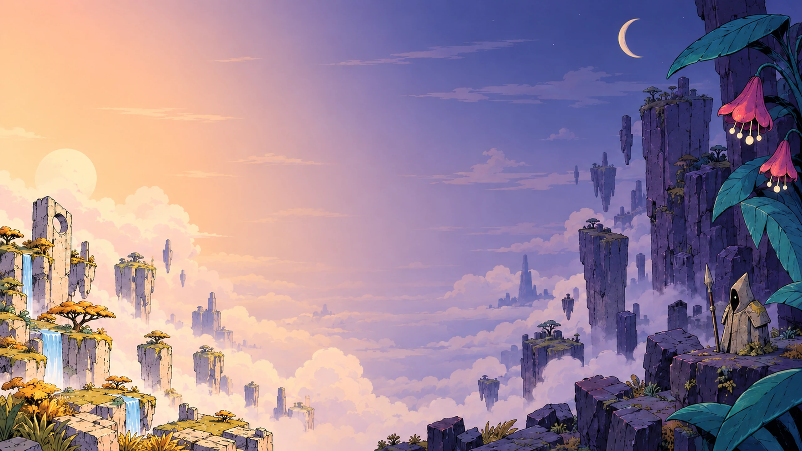
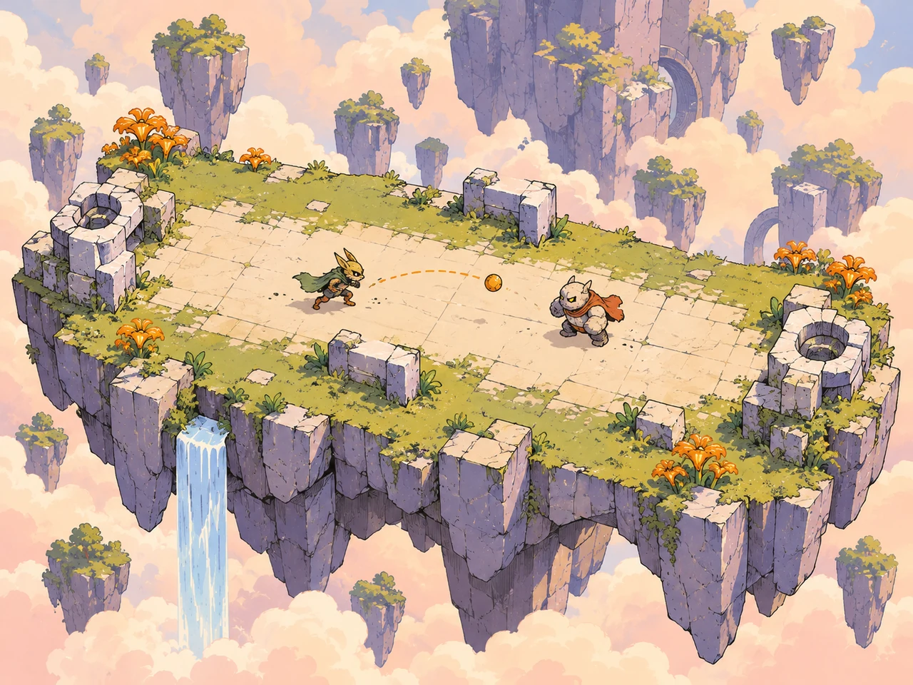
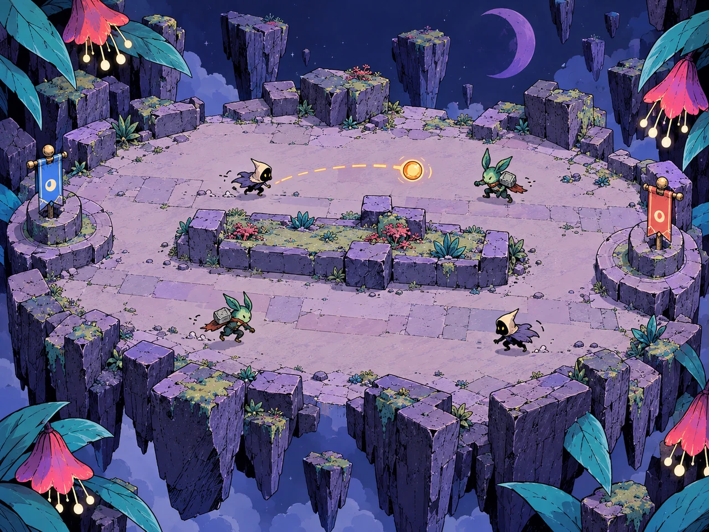
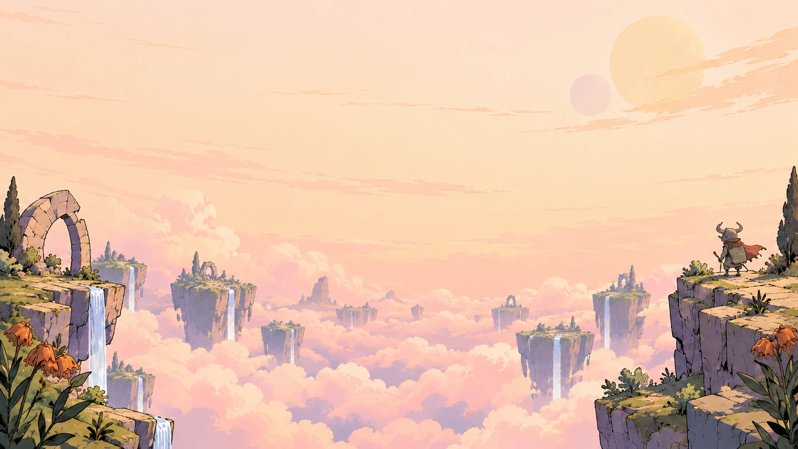

dodgethis / splash studies / 10 October 2026
Day isles. Night garden.
Overthrow takes the bright floating islands; Flagfall takes the violet garden. Weathered stone, heft and clear ink give both some edge. Sun Spell and Neon Dream are style references; naming stays open.
In the splash layout


MOBAOverthrow
MOBAFlagfallLayout study using the current splash’s title position, two tilted cards and bonus button. Map art sits inside the cards above their live labels. The logo is a placement stand-in; all delivered images are free of text and UI.
Background plates

01 / Day isles
Warm cloud sea, grass-topped stone and a distant traveller. Takes Sun Spell’s open air and waterfalls, with chipped masonry and quieter colour.

02 / Day into night · ship choice
Overthrow’s warm stone at left, Flagfall’s violet rock and luminous bell flowers at right. A continuous sky ties the maps together.

Map tile illustrations
03 / Overthrow
One open lane, an immense drop and opposing stone bastions. Angular creatures and battered shoulder plates give the friendly palette some bite.

04 / Flagfall
Two lanes around a low stone garden. Violet mass, a lighter readable floor and warm flower lights carry Neon Dream’s night palette.